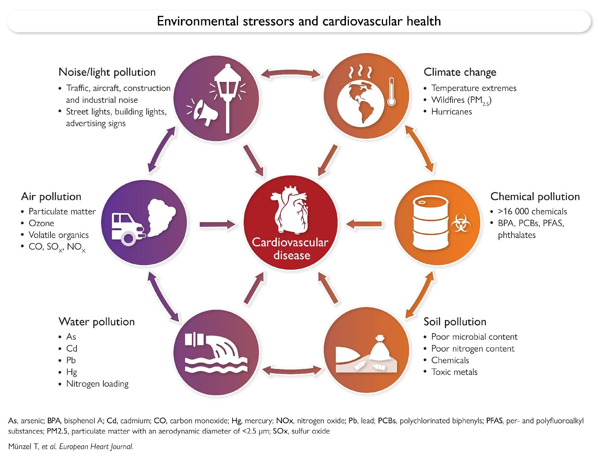
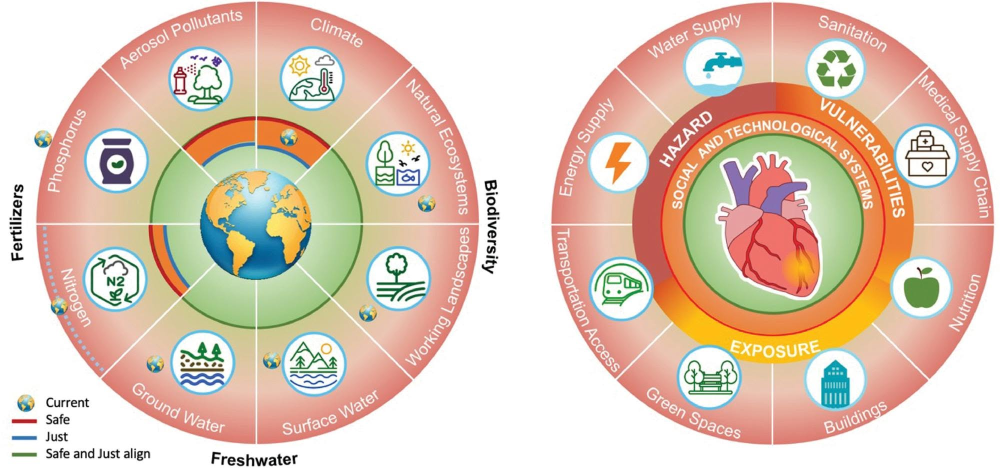

(no text — see the shared post below)
The European Society of Cardiology, the American College of Cardiology, the American Heart Association and the World Heart have published the first joint statement calling for urgent action to address environmental stressors as major contributors to cardiovascular disease.
The joint statement outlines six overarching priority areas and urges policymakers to adopt stricter air quality and noise standards, phase out fossil fuels and regulate toxic chemicals. It emphasizes that political will and international cooperation are essential to establishing and enforcing regulations and creating harmonised standards.
Get the details in #JACC:
Paper · JACC · 2026Environmental Stressors and Cardiovascular Health: Acting Locally for Global Impact in a Changing Worldjacc.org
#CVD #AirPollution

